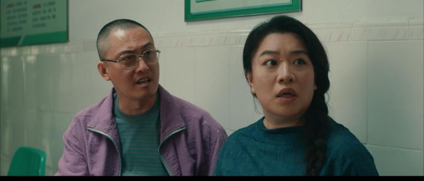
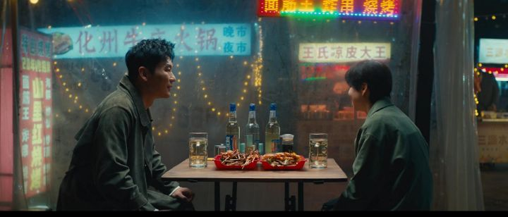
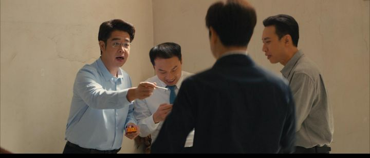

中国人吵架，有一句万能的开场白，也是万能的死循环：你到底什么意思？——我没什么意思！——你肯定有意思！这部电影干脆把它做成了片名。沈默和尤天意，一对结婚多年的东北夫妻，日子过成了官方简介里那个精准的词：对抗路。沟通基本靠吼，相处不得不苟，一把同花顺眼看要打成稀巴烂。中文的奥妙在这里露出了底牌："你真有意思"和"你这个人真没意思"，在婚姻的某个阶段，是同一句话——都是失望，都是控告，都是"我受伤了，而我认定是你干的"。这句车轱辘一样的灵魂拷问，问的人从来不想要答案，他要的是认罪。这是全片第一个值得停下来的地方：一段婚姻的败坏，往往不是从出轨或者变故开始的，是从问话变成审讯开始的。

故事的发动机是一场手续和一场意外。章盖了，表填了，离婚申请递交了，三十天冷静期开始计时——两个人前脚刚要各自潇洒，后脚一场谁也说不清的奇葩意外兜头砸下，一觉醒来，灵魂互换，彼此被原地"焊死"在对方的身体里。作为喜剧设定，这是个老梗；但作为一个无意中的神学陈述，它准确得让人一惊。耶稣论到婚姻时说过："既然如此，夫妻不再是两个人，乃是一体的了。所以，神配合的，人不可分开。"（马太福音 19:6）离婚手续能拆的是户口本上的两行字，拆不动的是那个"一体"——多年的习惯互相长进了对方的身体里，口头禅是共用的，连吵架的节奏都是排练好的。电影用一场魔法把这个真相演给你看：你以为签个字就各自清闲了，结果发现你们被焊得比想象中深得多。民政局受理离婚，受理不了"一体"。
互换之后，是全片最密集的笑料，也是最扎实的内容：两个人被迫去上对方的班。尤天意是医院的护士长，急脾气，说干就干，一分钟都等不了；沈默是区政府里的文员，慢性子，什么事都要想三遍，屁股沉得像焊在沙发上。于是顶着尤天意面孔的沈默进了医院，面对针头直接傻眼，还得硬着头皮给妻子的老对头扎针；顶着沈默面孔的尤天意坐进机关，替丈夫应付那位阴晴不定的领导，开车开得后排首长差点吐出来。导演在转场上留了一个很见心思的细节：针管里喷出的水，接到车窗上喷出的水——两份职业，两种疲惫，被一条水线缝在一起。还有一个镜头完全是女性导演才有的笔触：互换之后，给剖腹产的伤疤一个不加修饰的特写。那道疤替妻子说了她从来说不出口的话。
真正的转折不在笑料里，在两个"发现"里。沈默在医院连轴转了一天，忽然明白了家里沙发上随手乱丢的衣服、洗菜盆里泡着的碗——那不是懒，不是不拘小节，是真的一丝力气都不剩了。急诊室的强度，比区政府的办公室高出不止一个量级。而尤天意坐进丈夫的工位才知道，那份被她鄙视的"清闲"工作里，有改不完也改不好的稿子，有背后传小话的同事，有永远猜不透脸色的上司；丈夫念念不忘的那点理想，不是不务正业，是一个人在泥里给自己留的一口气。两个人的全部控告，原来都建立在同一块地基上：我不知道。我不知道你的累是这种累，我以为只有我的累才算累。

人物群像虽是喜剧式的速写，位置都站得清楚。张克坚，尤天意的老同学，是全片安插的一面镜子：他离了，看似自由，酒后吐真言，句句不提后悔，字字都是后悔——家没了，心跟着空了。他是编剧递给沈默的一封信：你以为的出口，有人替你走过了，是死胡同。那个推动剧情的儿子，是孩子在一切婚姻战争里的位置：炮火打不着他，硝烟全被他吸进肺里。单位里的郑金山一线牵出一桩贪腐案，给后半程添了惊险，也让"互换"从家务事升级成共同进退的战役；跳大神的"大仙"、一本正经的精神科医生——说真话的夫妻被当成疯子——名字跟妹妹凑成一对"天意天理"的娘家人尤天理，以及邻里李丽一家三口的鸡飞狗跳，都是这幅市井画卷的边角：每一扇窗户后面，都有一对夫妻在问"你到底什么意思"。

必须诚实地说，这部电影本身并不完美：梗旧，特效廉价，剧情的每一步都在意料之内，豆瓣评分也就在及格线上徘徊。但小沈阳和沈春阳的表演救了它——这对真夫妻演这对假夫妻，互换之后不是在演"男人变女人"，而是在演彼此：他吸气再开口的习惯，她拍桌子的节奏，二十年朝夕相处才模仿得出来的那些小动作。戏外的婚姻给戏内的婚姻作了担保。而正是这份"熟到骨头里"，把全片最大的问题衬托了出来：熟，为什么没有变成懂？天天睡在一张床上的人，为什么要靠一场魔法才能知道对方的累？
这就碰到人心的病根了。电影给的答案是"换位思考"，但看完电影在停车场吵起来的夫妻会告诉你，这味药为什么从来治不了病：因为我们的问题不是信息不足，是方向弯曲。罪在婚姻里最日常的形态，不是恶行，是一种聋——各人竖着耳朵收集对方亏欠自己的证据，同时把对方的疲惫自动静音。"你到底什么意思"问到最后，意思只有一个：你必须先懂我。两个都在等对方先懂自己的人，就是两个永远不会动的人。换位思考作为建议是对的，作为能力是不存在的——没有大仙，没有雷电，谁真的进得去另一个人的身体？电影自己也诚实：它只能靠一场五毛特效的魔法，才让这两口子挪了窝。
而福音在这里说出的事，比所有灵魂互换电影加起来更不可思议：那场互换真的发生过一次。不是魔法，是道成肉身——神的儿子穿上人的身体，进了我们的工种，上了我们的班：做过木匠的活，赶过最累的路，在井旁困乏，在旷野挨饿，在客西马尼怕到汗如血点。圣经为此写下一句专门堵住我们借口的话："因我们的大祭司并非不能体恤我们的软弱。他也曾凡事受过试探，与我们一样，只是他没有犯罪。"（希伯来书 4:15）"体恤"这个词，在原文里就是"一同受苦"——不是居高临下的理解，是从里面经历过。我们对配偶做不到的那件事，神先对我们做了。而且他走得比"体验生活"远得多：互换的终点是十字架，"神使那无罪的，替我们成为罪，好叫我们在他里面成为神的义。"（哥林多后书 5:21）我们的烂账换他的清白——这是宇宙间最不划算的一次灵魂互换，是他主动签的字。
所以圣经谈婚姻，从来不是给技巧，是给源头。保罗对丈夫们说的那句话，常被当成道德要求，其实是个供货渠道："你们作丈夫的，要爱你们的妻子，正如基督爱教会，为教会舍己。"（以弗所书 5:25）注意顺序：不是"你舍己，基督就爱你"，是"基督已经为你舍己了，所以你有得舍"。两个空杯子互相要水，是婚姻战争的全部物理学；先被斟满的人，才倒得出来。电影里那场魔法给了沈默和尤天意一次重新认识彼此的机会；福音给的不是机会，是一位先替你走进过你全部疲惫的主——被他懂过的人，才有力气去懂那个床那头的人。
片尾曲响起的时候，是刀郎为这部电影重新编录的《手心里的温柔》。老歌翻新，像极了这部电影想说的事：同一段婚姻，换一副耳朵再听一遍。灵魂归位，两口子该吵还是会吵——"你到底什么意思"这句话大概还会问上几十年。但问句是可以被救赎的。在十字架这边，它可以慢慢从审讯变回它最初的样子：新婚时躺在黑暗里，一个人戳戳另一个人，轻声问——你刚才那句话，到底什么意思？那时候，这句话的意思是：我想懂你。